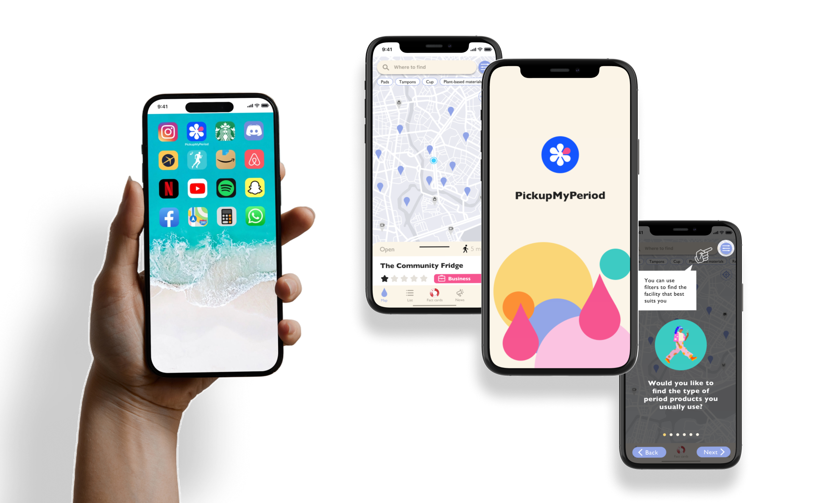
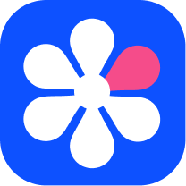

UX/UI Mobile App Prototype
PickupMyPeriod Mobile App/Honours Project
PickupMyPeriod Mobile AppOverview of the Project
Period poverty is a significant social issue that threatens health and education, extends inequality, and affects millions of people globally. In Scotland, the PickupMyPeriod app was developed to support the provision of free period products to all those who need them. However, the existing app faced challenges related to user awareness, accessibility, and usability.
The goal of this project was to redesign the PickupMyPeriod mobile app to improve access and awareness of free period products in Scotland, directly addressing the issue of period poverty. The design process followed the Double Diamond framework, incorporating User-Centred Design (UCD) and Design Thinking (DT) methodologies.
Extensive UX research was conducted throughout, including heuristic evaluations, questionnaire surveys, persona creation, user scenarios, user flows and journey maps, UX competitive analysis, affinity diagramming, A/B testing, task-based user testing, and UX dogfooding testing.
Role
UX/UI Designer
UX Researcher
Interaction Designer
Visual Designer
Duration
2024 | 6 months
Tools
Figma
LottieFiles
Final Cut Pro
Solution grown
Usability & Accessibility
Visual Identity
User Awareness
Navigation
UX/UI Redesign
Mobile App Prototype
Overview of the Project
Period poverty is a significant social issue that threatens health and education, extends inequality, and affects millions of people globally. In Scotland, the PickupMyPeriod app was developed to support the provision of free period products to all those who need them. However, the existing app faced challenges related to user awareness, accessibility, and usability.
The goal of this project was to redesign the PickupMyPeriod mobile app to improve access and awareness of free period products in Scotland, directly addressing the issue of period poverty. The design process followed the Double Diamond framework, incorporating User-Centred Design (UCD) and Design Thinking (DT) methodologies.
Extensive UX research was conducted throughout, including heuristic evaluations, questionnaire surveys, persona creation, user scenarios, user flows and journey maps, UX competitive analysis, affinity diagramming, A/B testing, task-based user testing, and UX dogfooding testing.
*****************
Role
UX/UI Designer
UX Researcher
Interaction Designer
Visual Designer
Duration
2024 | 6 months
Tools
Figma
LottieFiles
Final Cut Pro
Solution grown
Usability & Accessibility
Visual Identity
User Awareness
Navigation
UX/UI Redesign